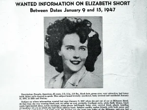

Amerika’nın Kötü Nam Salmış 5 Faili Meçhul Davası
Şifreli kodlar. Tehdit edici notlar. Yanlış giden romantik randevular. Her cinayet çözülmez. Dışarıdaki tüm amatör hafiyeler için, Amerika Birleşik Devletleri’nin en kötü şöhretli beş faili meçhul davasını bir araya getirdik:
{kind=link}

FBI – The Black Dahlia (Kara Dahlia)
Zodyak katili
Bu gazeteler sadece katilin mektuplarını değil, onlarla birlikte gönderdiği şifreleri de yayınladı. Gazeteler halkı gizli mesajların çözülmesine yardımcı olmaya teşvik etti. “408 şifresi” olarak bilinen bir metin, ‘İnsanları öldürmeyi seviyorum çünkü çok eğlenceli’ mesajını içeriyordu. Bir diğeri olan “340 şifresi” ise 2020 yılına kadar çözülemedi. “Umarım beni yakalamaya çalışırken çok eğleniyorsunuzdur” diye başlıyordu. Ancak mektuplar ve çözülen şifreler davayı çözmeye yetmedi. Birçok şüpheli araştırılmış olsa da Zodyak katilinin kimliği hiçbir zaman kanıtlanamadı. (En çok incelenen şüpheli olan öğretmen Arthur Leigh Allen, 1975 yılında ilgisiz suçlar nedeniyle akıl hastanesine yatırıldı). Katilin 1968’den önce ve 80’lerde de aktif olduğuna dair teorileri göz önünde bulundurduğumuzda, kaç kişiyi öldürdüğünden bile emin olmadığımızı itiraf etmeliyiz.
JonBenét Ramsey
Altı yaşındaki güzellik yarışması birincisi JonBenét Ramsey’nin 26 Aralık 1996’da ailesinin Boulder, Colorado’daki evinin bodrum katında ölü bulunmasıyla ilgili olarak hiçbir şüpheli tutuklanmadı. O sabah erken saatlerde JonBenét’in annesi Patsy 911’i arayarak kızının kayıp olduğunu ve evde bulunan bir fidye notunda kızının iadesi için 118.000 dolar talep edildiğini bildirmişti. Ancak birkaç saat sonra aile ve polis JonBenét’in aslında evden hiç çıkmadığını keşfetti. Evin ikinci kez aranması istendiğinde, babası John onun cesedini bodrumda buldu. Elleri ve ağzı bağlanmış, kafasına aldığı bir darbe ve Patsy’nin boya fırçalarından biri ile bir ipten yapılmış bir garotte ile öldürülmüştü. Müfettişler daha sonra JonBenét’in cinsel saldırıya da uğradığını ortaya çıkardı.
Şüpheliler kısa süre içinde ortaya çıktı: Rastgele bir davetsiz misafir, Ramsey’lerin Noel partilerinde Noel Baba kılığına giren bir aile dostu, JonBenét’in ebeveynleri ve dokuz yaşındaki erkek kardeşi Burke. Davanın kamuoyunun hafızasında yer etmesinin bir nedeni de soruşturmanın büyük bir kısmının beceriksizce yürütülmüş olmasıdır. Polisin Ramsey’lerin evine ilk varışından kısa bir süre sonra, ev fiziksel kanıtlar için iyice taranmadan önce, Ramsey’lerin arkadaşları aileye destek olmak için geldiler ve polis onların evde serbestçe dolaşmalarına izin verdi. Hatta bazı arkadaşları Patsy’nin mutfağı temizlemesine yardım etti. Eğer kesin fiziksel kanıtlar varsa bile, bunlar neredeyse anında yok edilmiştir.
Kara Dahlia
15 Ocak 1947’de 22 yaşındaki Elizabeth Short Los Angeles’ta ölü bulundu. Cesedi o kadar parçalanmıştı ki, onu bulan kadın -küçük kızıyla yürüyüşe çıkan bir anne- bir mankene rastladığını düşündü. Olay anında sansasyon yarattı. Kısa süre sonra Short’a, şeffaf siyah elbiselere olan düşkünlüğüne ve sadakatsiz bir ev kadınının öldürülmesini konu alan 1946 yapımı kara film The Blue Dahlia’ya atfen Black Dahlia lakabı takıldı. Short, reşit olmadan içki içmekten sabıkası olan uçarı bir parti kızı olarak nitelendiriliyordu. Görünüşe göre, genç bir kadının istismarlarının bir kataloğunu oluşturmak, onun kaybının yasını tutmaktan daha heyecan vericiydi. Katil olduğu iddia edilen kişinin polise gönderdiği mektuplar medyadaki çılgınlığı daha da arttırdı.
Short’un cinayeti faili meçhul olarak kabul edildiğinden beri amatör hafiyeler kendi çözümlerini sundular. Eski bir polis dedektifi cinayetten rahmetli babasını sorumlu tutarak I Am the Night adlı TV mini dizisine ilham verdi. Bir İngiliz araştırmacı, Kaliforniya polisinin katille işbirliği yaptığını öne sürdü. Ancak davadaki fiziksel kanıtların çoğu zaman içinde kaybolduğu ve polis tarafından yanlış kullanıldığı için -ve kilit oyuncuların çoğu artık ölmüş olduğu için- hiçbir teori makul bir şüphenin ötesinde kanıtlanamayacak gibi görünüyor.
Hall-Mills cinayetleri
Bir papaz ve bir koro şarkıcısının derme çatma bir aşıklar yolunda öldürülmesi küçük bir kasabayı şoke etti ve yaygın suçlamalara, tutarsız tanık ifadelerine ve birden fazla sahte itirafa yol açtı.
Yıl 1922’ydi ve New Brunswick, New Jersey’de papaz Edward Wheeler Hall, cemaatinin bir üyesiyle evlilik dışı bir ilişki yaşıyordu: aynı zamanda evli olan Eleanor Mills. İkili 14 Eylül’de birbirleriyle buluşmak üzere aile evlerinden ayrıldı. Hall o gece eve dönmeyince karısı Frances ve kayınbiraderlerinden biri arama çalışmalarına başladı, ancak ne Hall ne de Mills iki gün sonra aşıklar yolunda yürüyen başka bir çift tarafından bir yengeç elması ağacının altında cesetleri bulunana kadar bulunamadı. Hall başından bir kez vurulmuştu ama Mills’in cesedi vahşice parçalanmıştı: yüzünden üç kez vurulmuş ve boğazı o kadar derinden kesilmişti ki neredeyse kafası kopacaktı. Daha sonra yapılan otopside dilinin ve gırtlağının kesildiği ortaya çıktı. Öldürüldükten sonra, çiftin cesetleri neredeyse kucaklaşacak şekilde yerleştirilmişti.
Dava açıkça kişiseldi. Hall ve Mills’in ilişkisi kasabada herkes tarafından biliniyor olsa da, her iki eş de olaydan haberdar olmadıklarını iddia ediyordu ki bu iddia müfettişleri (ve hikâyeyi hemen ele geçiren magazin basınını) oldukça kuşkulandırdı. Frances, kardeşleri William ve Henry Stevens ile birlikte baş şüpheliler olarak görülüyordu. Ancak savcılık ne kadar uğraşsa da kardeşleri mahkûm edecek hiçbir kanıt bulamadı. Muhtemelen basında çıkan haberlerin etkisiyle tanık ifadeleri sürekli değişti; dikkat çekmek isteyen kişiler cinayetleri itiraf etmeye devam etti; ve “hatıra” arayan gezginler suç mahallini çiğnediğinde fiziksel kanıtlar yok edildi. Sonuç olarak Edward ve Eleanor’un cinayetleri asla çözülemedi.
Lizzie Borden
Lizzie Borden bir balta aldı / Ve annesine kırk darbe indirdi; / Ve ne yaptığını görünce, / Babasına kırk bir darbe indirdi.
Bu ünlü tekerleme, Lizzie Borden’in 4 Ağustos 1892’de babasını ve üvey annesini öldürüp öldürmediği konusunda hiçbir zaman şüphe duyulmamış gibi görünmesini sağlar. Ancak resmi olarak katilin kimliği gizemini korumaktadır.
Lizzie ve hizmetçisi Bridget Sullivan, Borden’ların evinde Bay ve Bayan Borden’larla yalnızken Lizzie -kendi ifadesine göre- babasını ölü olarak bulmuştur. Keskin olmayan bir aletle kafasına defalarca vurulmuştu. Üst katta üvey annesinin cesedini buldu. Başlangıçta, Lizzie aleyhindeki kanıtlar çok kötü görünüyordu: kısa süre önce prusik asit (bir zehir) satın almaya çalışmış ve sobada bir elbise yaktığı iddia edilmişti. Dahası, suç ortağı olduğundan şüphelenilen Sullivan, 4 Ağustos akşamı evden bir paket taşırken görülmüştü. Ancak Lizzie’nin 1893’teki duruşmasında mahkeme tüm bu kanıtların sadece ikinci dereceden olduğuna karar verdi. Lizzie suçlu bulunmadı ve başka hiçbir şüpheli de tutuklanmadı.